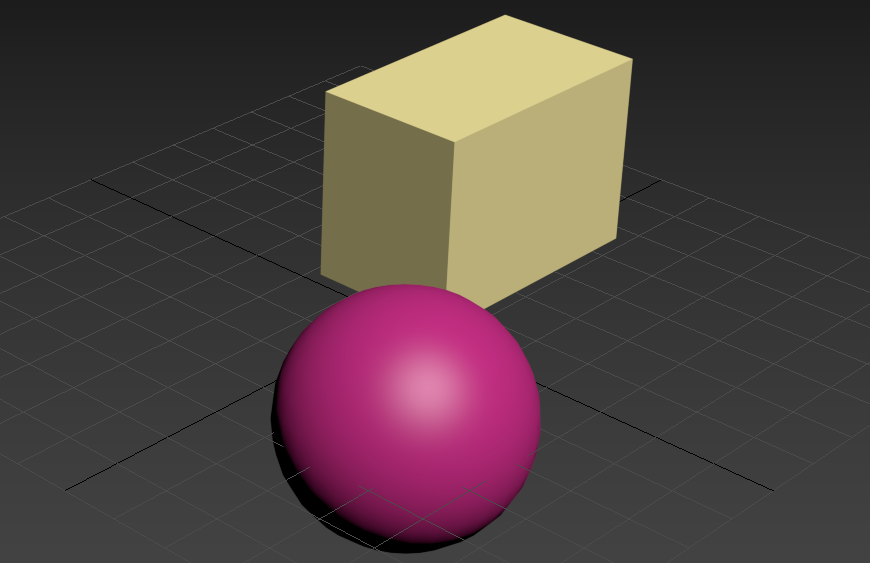
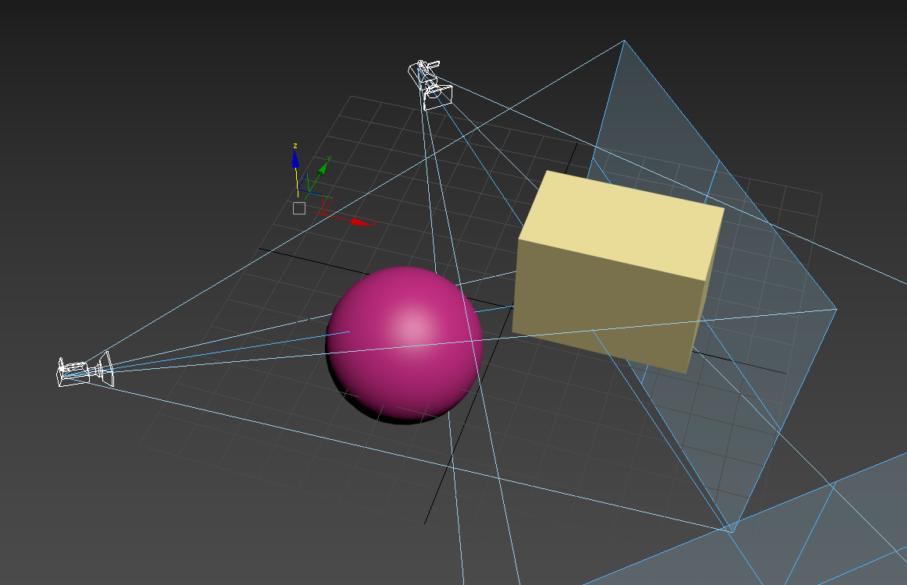

컴퓨터 그래픽스에서 MVP 모델이란 물체들의 위치, 크기, 회전의 변환을 행렬 곱으로 쉽게 표현하는 방식을 가르킵니다. Model-View-Projection의 약자로, 각 단계를 순서대로 걸쳐서 비로소 우리가 화면에서 보는 물체들이 보여지게 됩니다.
Model 단계에서는 각 물체들을 구성하는 Vertex들의 위치를 World 좌표로 바꿔줍니다.
위 그림과 같이 구와 직육면체가 있을 경우, 사용자가 구의 위치만 옮기고 싶으면 구를 구성하고 있는 vertex들의 위치만 변형시켜 주고, 직육면체의 vertex들의 위치는 바꾸면 안됩니다. 그렇기 때문에 각각의 물체(object)들은 자신만의 변환 행렬을 가져야하고, 이를 Model matrix라고 부릅니다. 이를 통해 각 물체들이 가지는 위치, 회전, 크기를 각각 정해줄 수 있습니다.
View 단계에서는 물체들을 보고 있는 눈(Camera)의 위치를 정해줍니다.
위 그림과 같이 카메라의 위치에 따라서 보여지는 직육면체나 구의 위치나 크기가 다르게 보입니다. 그렇게 때문에 모델 자체의 local 좌표를 World 좌표로 바꿔 준 다음, 보는 사람의 위치에 따라서 전체 세상(world)를 다르게 보여주는 처리를 해야합니다. 이를 위해서 카메라를 뒤로 움직이고 싶다면 반대로 모든 vertex들을 앞으로 보내거나, 카메라를 왼쪽으로 회전하고자 하면 전체 화면을 반대로 오른쪽으로 회전하는 변환행렬을 적용시켜 줘야하는데, 이를 View 행렬이라 부릅니다.
Projection 단계에서는 물체들의 vertex들이 카메라 화면의 어느 위치에 존재하는지를 정합니다.
Projection은 우리말로 표현하면 정사영과 비슷한 개념이라고 생각하시면 됩니다. View 단계에서 카메라의 위치를 정해줬으면 모든 vertix를 카메라가 보는 방향과 수직인 방향으로 정사영시켜서 한 평면을 만들고, 그것을 화면에 보여주는 겁니다. Projection의 방식에 따라서 다양한 방식으로 세상을 표현할 수 있습니다. 수학 시간때 3차원 좌표를 그릴때 자주 쓰는 직각 투시법(orthographic projection), 원근법이 보장되는 투시원근법(perspective projection) 등 다양한 종류가 있습니다. 수업시간때 배운 왼쪽 사진처럼 projection도 가능합니다.
이 예제에서 위에서 배운 Model, View 행렬의 값을 바꾸어서 화면을 전환시켜 봅시다. Model 행렬은 가운데에 보이는 큐브 object에만 적용됩니다.
Projection 행렬은 고정되어있습니다.
Projection Matrix
View Matrix
Model Matrix